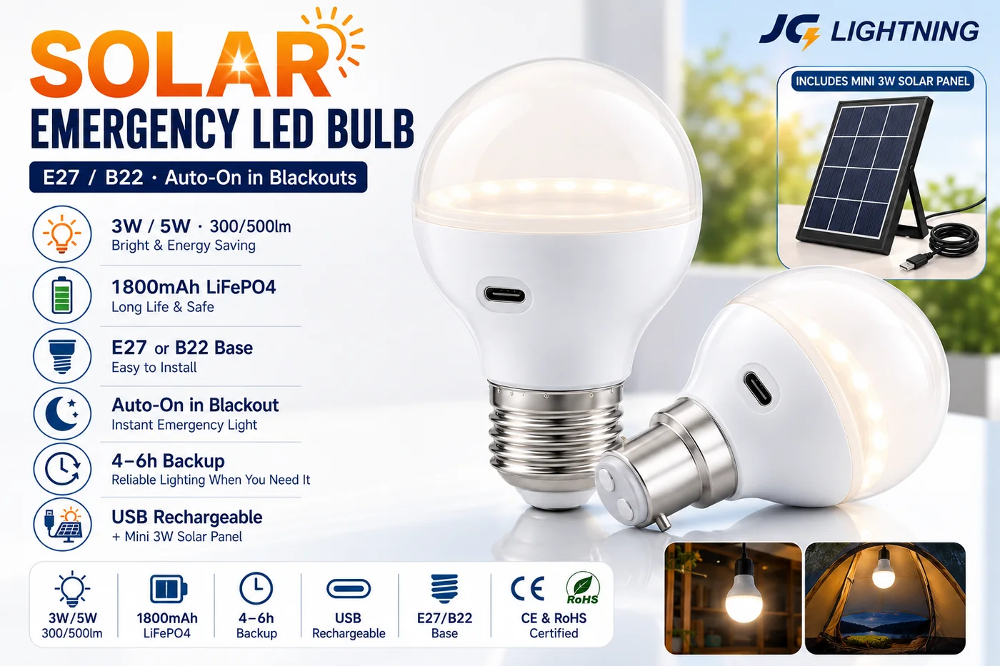

Solar Emergency LED Bulb (E27 / B22)
A standard-fit bulb that keeps glowing when the power cuts — 3W/5W in E27 or B22, with a built-in 1800mAh LiFePO4 battery, auto-on in a blackout and 4–6 hours of backup.

The simplest blackout product to sell: it looks and fits like a normal bulb (E27 or B22), but a built-in LiFePO4 cell keeps it lit when the power cuts — automatically. It charges while the grid is on, or via USB or the included mini 3W solar panel when it isn't. For distributors in outage markets, it's the fastest-moving impulse SKU because everyone already has the sockets.
Specifications
| Power | 3W / 5W |
|---|---|
| Luminous flux | 300 / 500 lm |
| Battery | 1800mAh LiFePO4 |
| Base | E27 or B22 |
| Backup | 4–6 hours, auto-on in blackout |
| Charging | USB + mini 3W solar panel included |
| Certification | CE + RoHS |
| Customisation | OEM / ODM — packaging, branding |
Why buyers choose it
Fits existing sockets. E27 and B22 bases mean no installation — a true drop-in upgrade.
Automatic backup. Lights itself the moment the grid drops; charges by mains, USB or solar.
Crisis-reorder SKU. The product distributors can't keep on the shelf during outage events. Load-shedding stocking guide →
Certified & OEM-ready. CE + RoHS with every quotation; packaging and branding available.